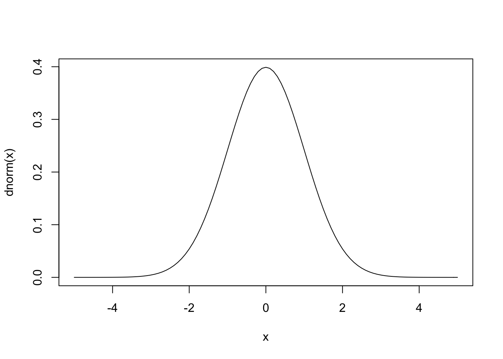

Storyboards (in R Markdown)
Storyboarding is a key component of designing and conveying a user experience. For this assignment, we created two storyboards for two different experiences our persona might have with the product. We created one hand drawn storyboard and one photo storyboard. I have included my final storyboards below.

The prior week’s studio session was useful for us to begin to think of potential scenarios. We begun working by individually creating mind maps of possible data and actions our product could include. I have included our mind map below.
We discussed each of our mind maps and listed the top ideas. We, then, individually decided on one feature to focus on, and created a short storyboard. We critiqued each other’s storyboard and shared the aspects we liked. Below is one of the short storyboards we created. The yellow stickers were markers for aspects that should be included in the final storyboard.
These activities helped me a lot when creating my final storyboards, as I had no previous familiarity with storyboards. I was initially overwhelmed but I quickly felt comfortable and confident completing the task.
R Logo